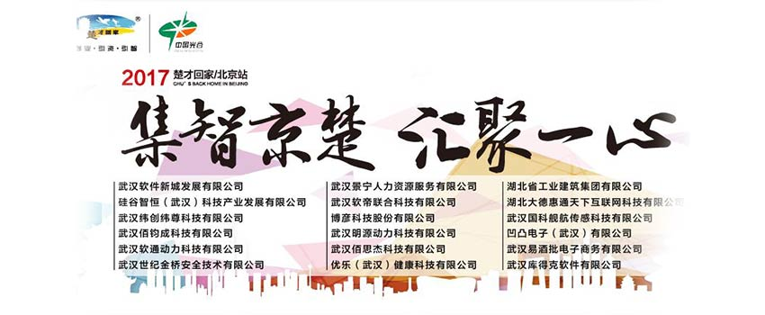

【2017/07/20，北京讯】纬创软件将于7/22在2017楚才回家北京站招聘销售管理、技术开发、技术支持三大类优秀人才，我们提供具竞争力薪资与充分发挥职涯空间，等你加入我们一起实现梦想。
举办时间： 2017年7月22上午9:00~16:30
举办地点：北京香格里拉酒店(北京市紫竹院路29号)
纬创软件展位：V3和C1
楚才回家简介 “楚才回家”人才计划始于2012年，是武汉市政府发起，武汉东湖新技术开发区和武汉市商务局联合主办的、面向全球华人中高端人才的大型活动。主要为期冀回归武汉和中国光谷谋求投资、职业发展和创业的精英（团队）搭建的“直通车”平台，尝试以创新模式吸引和帮助全球的中高端人才快速落户光谷，共同投资、创业、兴业。
纬创软件简介 纬创软件是服务全球的软件外包服务及信息整合服务领导厂商，最擅长用IT技术的优势提供服务与解决问题，客户包括美加、欧洲、大陆、台湾、日本等地世界500强企业以及国内外优质企业，我们成立于1992年，2014年在台湾柜台买卖中心挂牌交易，是顾客长期而且值得信赖的合作伙伴。
我们在展位等你来洽谈：V3和C1展位
NEW20170720-02
招聘职位5-1
客户经理/销售经理(6人
)
岗位职责：
负责开发和维护相关类型客户，并有计划的完成销售目标。
任职要求：
1、 专科（含）学历以上；开拓能力强，并有良好的沟通能力和人际交往能力；具有良好的自我管理能力及业务开发能力，自信、热爱销售工作、工作踏实，能随受压力，勇于挑战可以独立完成工作任务；
2、 有软件行业服务外包经验或资深大客户销售3年以上，熟悉本地区市场和相关客户分布，有一定的客户资源；
3、 有软件行业人力外包经验者优先。
4、 在计算机软件、金融、电信系统行业有良好的客户资源者，能较快完成重大业绩优先考虑；
5、 自带成熟项目可以考虑特殊人才引进，公司提供宽松的职业发展平台（优秀人才也可考虑不离开原单位岗位、项目合作）。
工作地点
广州/深圳/成都/重庆/贵阳/长沙/武汉
招聘职位5-2
JAVA工程师（初中级）(10人)
任职要求：
1、 熟练掌握主流框架如springMVC、Hibemate、Mybatis的使用和原理；（14年及以前毕业，统招本科;有银行经验的可以推2015年毕业）
2、 熟练使用WEB前段技术如html、css、javaScript、ajax、JSP、JSON、Jquery等；
3、 至少掌握SQLSERVER、Oracle、MySQL中一种数据库的开发，掌握数据库运行方式和实物管理的基本原理。
4、 有银行或者金融背景工作经验者优先。
工作地点
福州：福州市马尾青洲路1号兴业研发中心
招聘职位5-3
JAVA工程师（中高级）(5人)
岗位职责：
执行持续的分析和需求处理
开发和测试高质量的产品
执行故障和客户支持
推动产品和流程的持续改进
3年以上Java开发工作经验，本科以上的学历
有大数据技能更佳
技能要求：Java知识和技能
1、理解java多线程,充分了解spring框架
2、有专业知识和技能SVN或Git
3、了解HTML和CSS和JavaScript的基本知识，Web服务:SOAP和REST
4、良好的英语阅读和大学英语四级考试
5、基本的Linux操作，熟悉文件系统操作命令，熟悉文本/日志文件编辑和搜索
6、擅长根据给定的需求编写SQL
7、擅长英语写作和口语
8、JVM知识：了解到任何JVM调优工具或优化，了解No
工作地点
广州天河区
招聘职位5-4
Support Engineer(4人)
技能要求：
1. 熟练良好的Linux 系统操作能力, 熟悉 SUSE or RHEL etc
2. 良好的网络知识，对 TCP/IP/HTTP协议有实操经验, 熟悉OpenSSL/HTTPs和具备网络故障处理能力
3.熟悉KVM或VMware，有实际操作经验
4.良好的脚本能力以及过往实际经验, 包括SHELL, Perl or Python, etc.
5.熟悉 Javascript 或者 C++
6. 良好的数据库知识 , 熟悉 PostgreSQL, Oracle, Cassandra Database; 数据库高级配置和调优的能力是加分项
7.了解虚拟化和云相关的知识，有实际经验是加分项
8.了解无线接入或者核心网是加分项
9.了解LDAP/Diameter/SNMP 协议是加分项
工作地点
广州天河区
招聘职位5-5
C#/ASP.NET(10人)
主要职责：
1.C#相关项目软件开发。
任职要求：
1、 3到5年C#开发及WPF使用经验；
2、 有WCF、HTML5经验者优先；
3、 英语读写熟练优先；
4、 熟悉设计和架构技巧，了解敏捷开发者优先；
5、 熟悉服务导向架构、单元测试或测试驱动开发者优先；
6、 了解微软Azure云相关知识（Iaas和Paas）者优先；
工作地点
武汉金融港
简历接收邮箱：Hr.wh@wistronits.com; tinghu@wistronits.com
